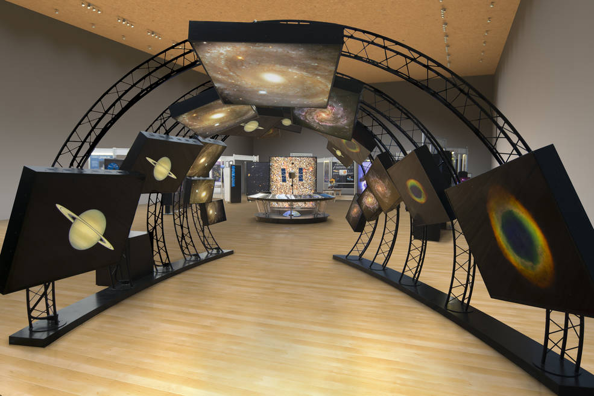
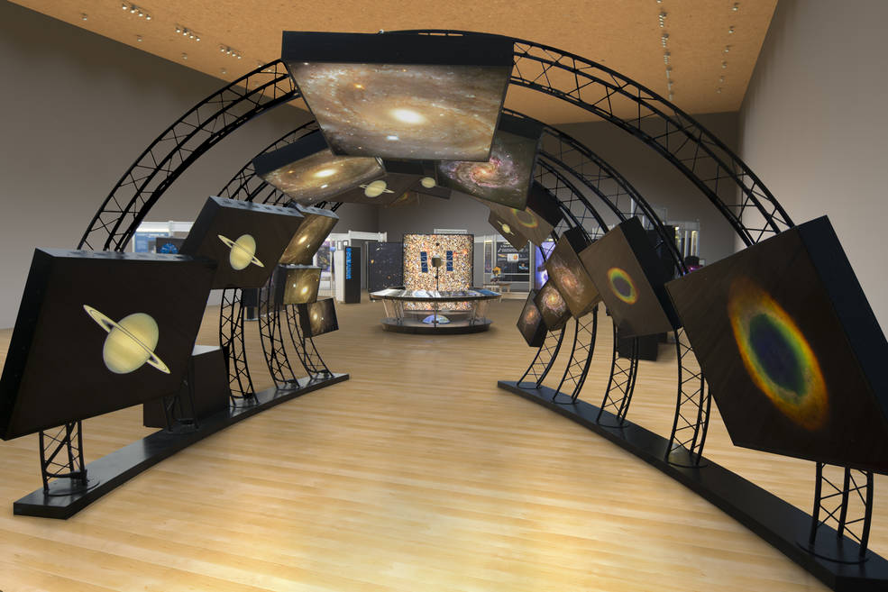
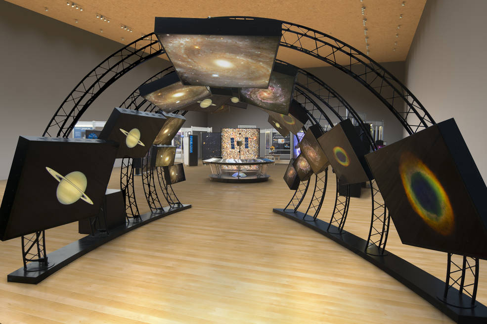

In this website you will explore the Space technology timeline and my future prediction of innovation/technology in space.

My first one is a making app where you can view space. I thought of this because there is the internet in space. This app will give you a view of space. It will be to scale because a lot of us have the wrong interpretation of space, especially with the measure and distance of the planet and looks. This app is gonna have :
My second one is more imaginative and logical. When thinking of this tech invention I thought of a problem in space. The problem I thought of is when an astronaut goes out of the spaceship they need to be connected to something or they're gonna “float away”. So I connected my learning from chemistry and the Big history project class. This tech invention is the machine that produces waves that make gravity high. If this machine is on then the astronaut won’t float away when goes out of the spaceship. How this machine is and how it works :
My third one is very, very possible. For this invention, I also thought of space trouble which is the repeating travel between earth and outer space. This invention is kinda like the robotic delivery machine that will deliver. This machine will be very fast. Also, another problem I thought of is the astronaut having to reuse the pee and drink it. So this delivery machine helps them get more fresh water and supplies easier. This will also deliver an important document and recruitment. This will also collect objects from outer space. For example, when a supernova happens this machine will go since we can not go because of the heat and radiation. This machine can go and collect elements from the supernova that our earth does not have much of.